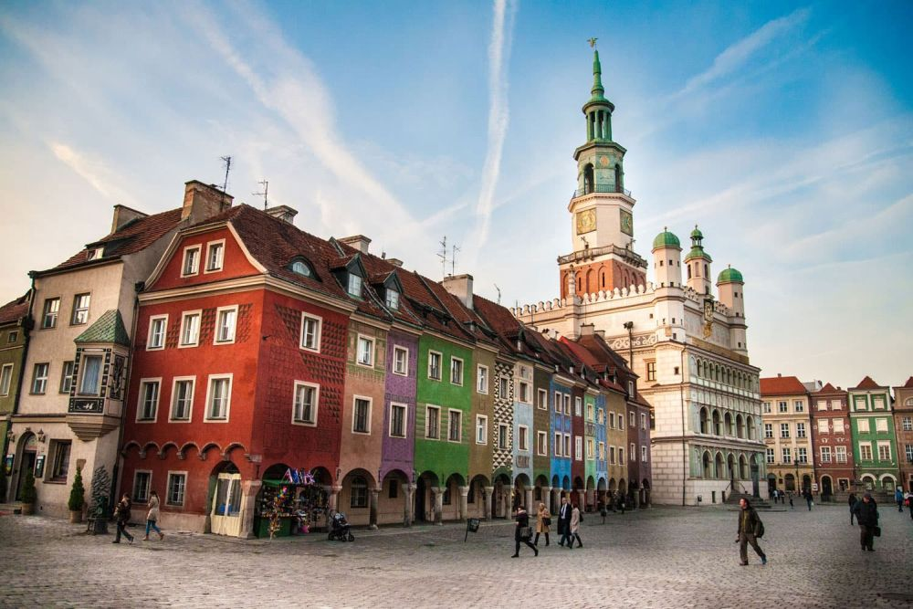

Descoperă Poznań - Orașul istoric și cultural din Polonia
Poznań este un oraș cu o moștenire istorică și culturală bogată din Polonia, cu atracții captivante pentru vizitatori:
-

Centrul vechi pitoresc
Străzile pline de viață, piețele vibrante și clădirile istorice creează o atmosferă autentică.
-

Piața Stary Rynek
Această piață centrală impresionantă găzduiește clădiri colorate și este punctul de întâlnire al localnicilor.
-

Catedrala St. Peter și St. Paul
O catedrală monumentală cu o istorie îndelungată și o arhitectură impresionantă.
-

Maltanka - Trenulețul copiilor
O atracție adorată de cei mici, acest trenuleț oferă o plimbare pitorească prin oraș.
-

Cetatea Poznań
O cetate istorică cu fortificații și zone verzi, perfectă pentru plimbări relaxante.
Concluzii
Poznań îmbină cu succes istoria și cultura într-un peisaj urban vibrant, oferind o experiență autentică.